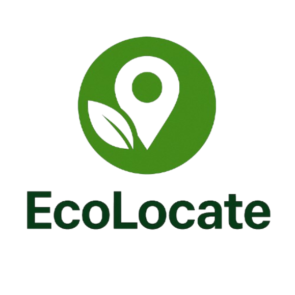

EcoLocate
This project entails my fully developed web-based platform, and its processes, that educates users on sustainable e-waste management, providing them with their nearest local recycling program locations. This tool emphasizes accessibility and community-driven solutions by connecting the user to organizations in their area. The functions of the website are based on circular economy principles (Weforum.org 2019) and ethical disposal frameworks (Techbuyer US 2022) to ensure scalability. This website focuses on encouraging community engagement, data accuracy, and accessibility.
Overview
The frontend of the website, or the user interface and eyecandy, was programmed using React, a JavaScript library, and a combination of HTML and CSS for minimalist styling. JavaScript was used to enable the interactive abilities of the website, most notably used for triggering the user’s brower’s built-in Geolocation API in which the user’s coordinates were used to calculate the distance from the recycling centers. The backend was most notably built using Node.js and Express.js to manage the processes for server-side logic and API requests to be flowed to the frontend smoothly. The most important feature of the backend is integrating Google’s Places API into the code. This process entailed acquiring a Google API key through the Google Cloud Platform, setting up project credentials to be securely stored as environment variables in a separate file, or package, known as the dotenv for security. This web tool facilitates e-waste management through merging education, technology, and community action. By leveraging existing infrastructure like the EPA’s recycling guidelines (Oswer 2014) and circular economy models (Weforum.org 2019), the website offers a legitimate and accessible tool for reducing e-waste’s environmental footprint. Future applications could integrate AI-driven analytics to predict regional e-waste trends or partner with manufacturers to promote device refurbishment. Another future application can be a mobile app, not a website, in which users can utilize this technology on their smartphone app, not just a website. Ultimately, the project uses localized, tech solutions in driving systemic change. This is one tool that can be expanded upon for more widespread adoption.